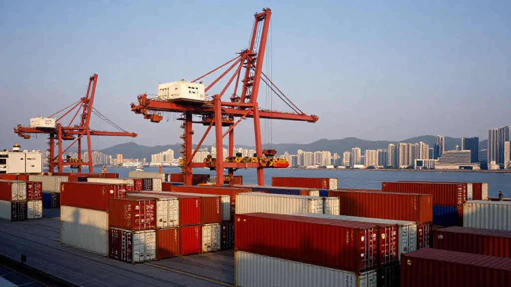
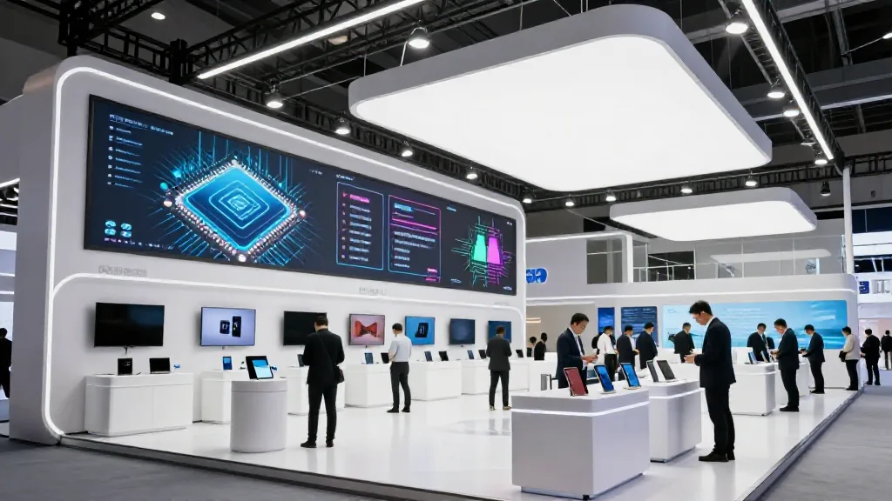
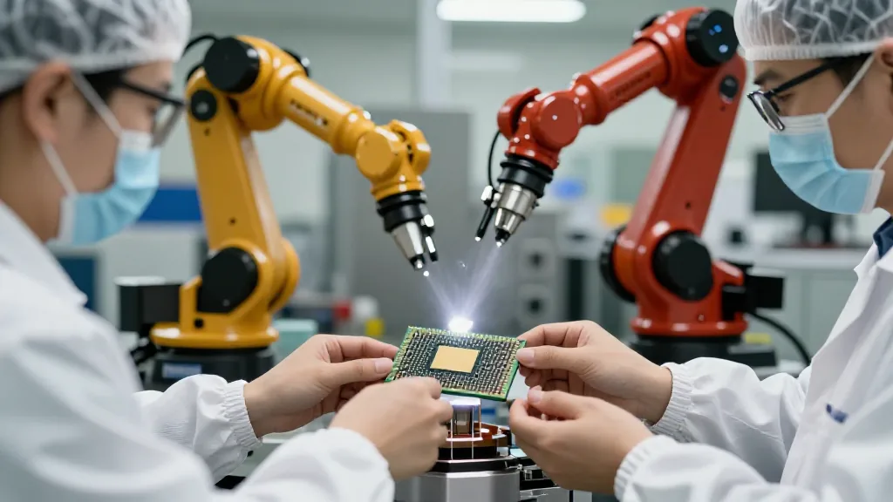
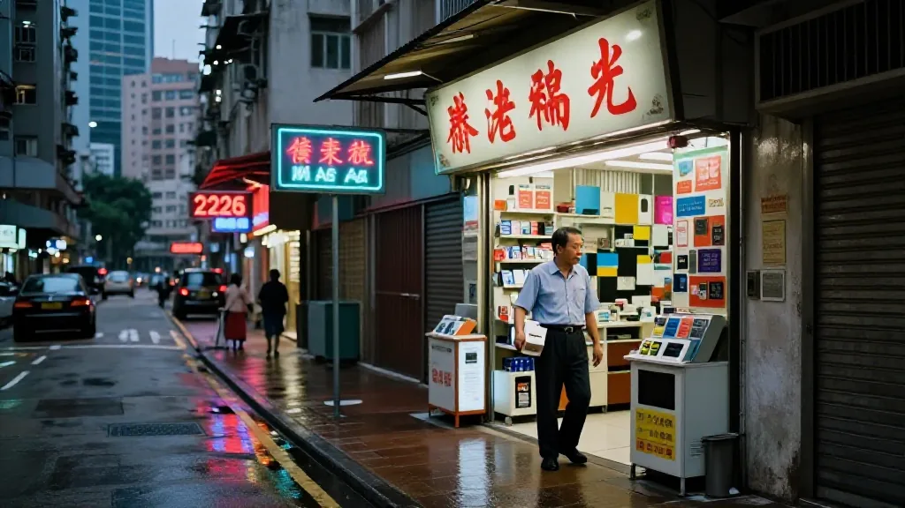

【鄭哥點評】 欄目：鄭哥博客點評
《香港出口暴漲 50.7%，我哋呢一代外貿人點跟》

圖片由 AI輔助創作（Z-Image-Turbo）
鄭哥 Hany · 2026 年 9 月 22 日 · 下午 2 點
——一個 70 後外貿老兵，睇香港 2026 年 7 月出口暴漲 50.7% 嘅觀察筆記
今日下午茶水間，貿易公司嘅細路同事忽然舉起手機走過嚟：「鄭哥，你睇吓！香港 7 月商品出口按年升 50.7%！」
我望一眼，數字係真嘅：
2026 年 7 月，香港商品出口按年上升 50.7%。
其中人工智能相關電子產品的出口，再度錄得尤為可觀增幅。
1-7 月整體貨物出口貨值按年上升 40.9%。
政府統計處：上半年實質本地生產總值按年增長 5.1%，其中第二季 4.3%。
我飲啖功夫茶，諗起 1998 年嗰陣我第一次踩入廣州外貿公司嘅門口。
嗰陣時，香港係全世界最大嘅轉口港，葵涌貨櫃碼頭全世界最繁忙，深水埗電子市場嘅山寨貨坐船去全世界。我哋呢一輩，做外貿，先天就係跟住呢條轉口鏈行。
28 年後，條鏈形狀完全唔同咗，但引擎——依然係香港。
一、1998 年嘅香港出口：係山寨機，係玩具，係電子零件
圖片由 AI輔助創作（Z-Image-Turbo）
1998 年入行嗰陣，我哋做嘅出口，係邊啲嘢？
電子零件、變壓器、塑膠殼、收音機、遙控車、聖誕燈飾、塑膠花、玩具、文具、傘……再加埋當時啱啱起飛嘅 VCD/DVD 機同光碟。再隔兩年就到 2000 年，Nokia 8250、Motorola V998 嗰個年代開始，山寨機同水貨當道。
嗰陣時嘅香港，作為中國內地同歐美市場之間嘅超級轉口港，吞吐量同金融結算都係頂級。我哋呢間廣州公司，幾乎所有貨都要經香港出，全套信用證流程喺匯豐銀行做。
嗰陣做外貿，三大件：信用證、提單、發票。
客人要嘅係：快、平、穩。香港就係嗰個「穩」。
嗰時嘅年輕外貿人，對香港有種近乎宗教嘅感覺。
後來 2008 金融海嘯、2010 內地工資起飛、2015 跨境電商起步——香港轉口港嘅光環慢慢褪色。2019 社會運動、2020 疫情、2022 美元加息——一連串衝擊之下，香港轉口數字插水，葵涌碼頭啲貨櫃堆到冇人嚟提，呢個新聞好多老外貿都記得。
嗰陣時我哋呢班老兵傾偈，飲住功夫茶，講一句：「香港，仲有冇得救？」
嗰時冇人識答。
二、2022-2024 嘅低谷：電子業萎縮，係低毛利嘅死亡漩渦

圖片由 AI輔助創作（Z-Image-Turbo）
2022 年至 2024 年，我哋呢個圈入面，電子出口係非常痛嘅兩年。
原因好簡單：
- 全球智能手機出貨量放緩，零件進入殺價競爭；
- 東南亞（越南、印度）搶走咗一部分組裝代工；
- 原材料價格波動，內地工廠利潤壓到得返個位數；
- 中美脫鈎令好多港商客戶 hold 住 order 唔敢落；
- 香港本地消費收縮，物流、寫字樓租金、鋪位都變負資產。
嗰兩年，我睇住唔少 80 後嘅中小型外貿公司關門。
做開 Nokia 老人機嗰啲，做開 USB 風扇嗰啲，做開藍牙耳機嗰啲——幾乎係團滅。
嗰陣時我哋呢班老兵傾偈，飲住功夫茶，講另一句：「電子業，未來仲係咪香港嘅底盤？」
嗰時都冇人識答。
三、2025-2026 嘅轉捩點：AI 電子撐起成條鏈

圖片由 AI輔助創作（Z-Image-Turbo）
2025 年初開始，AI 熱潮喺香港出口結構入面嘅角色開始反轉。
AI 伺服器、AI 加速卡、HBM 高頻寬記憶體、邊緣運算模組、AI 手機（華為 Mate XT 2 就係一例）、AI PC、AI 眼鏡——呢啲新興電子產品，2026 年 1-7 月帶動香港電子產品出口。電子產品佔港總出口超過七成，繼續成為主要增長引擎，其中半導體及電子零部件表現尤為突出。
我哋廣州公司由 2024 年底開始，已經喺做緊呢類客戶：
- 歐洲 AI 伺服器散熱模組 客戶，訂單已經排到 2027 年 Q1；
- 東南亞 AI 加速卡 PCB 客戶，每批都要過 CE-RED、FCC；
- 中東 邊緣運算盒（edge AI box）客戶，用嚟做智慧城市；
- 北美 AI 眼鏡 ODM 客戶，從結構件到光學模組全鏈條。
呢啲客戶同 2008-2018 嗰啲手機客戶，唔係同一種生意。
單價高、毛利好、技術門檻高、認證複雜、續單穩定。
每張單 50 萬美金起跳——嗰個年代嘅外貿人根本唔敢想。
我哋呢一輩，做開電子嘅老炮兒，最明顯嘅感受係：
客戶結構變咗。由「拼價格」轉到「拼技術」。由「拼交期」轉到「拼認證」。由「拼數量」轉到「拼方案」。
呢個轉變，剛好對應香港政府統計處嗰句結論——「人工智能相關電子產品的出口再度錄得尤為可觀增幅」。
四、海豐人嘅外貿味：功夫茶 + AI

圖片由 AI輔助創作（Z-Image-Turbo）
講到呢度，我哋海豐人嗰句老話又浮上嚟——「茶涼未？再沖一壺。」
細個喺海豐老屋睇我阿爸招呼客人，永遠都係先沖一壺鳳凰單叢，傾兩句閒話，再入正題。客人走嘅時候，阿爸會送到門口，講句「得閒再來飲茶」——呢句話，就係海豐人嘅「後續合作」承諾。
2026 年嘅今日，我哋做 AI 電子外貿，一樣係呢套邏輯：
客戶第一次落單，叫「試探」；
客戶第二次落單，叫「立信任」；
客戶第三次落單兼帶朋友嚟，叫「生態」。
外貿老炮兒嘅底層邏輯，28 年嚟冇變過。
變嘅只係：以前我哋飲茶傾 Nokia 老人機方案，今日飲茶傾 HBM 散熱方案。
茶葉換咗普洱，客人換咗白頭髮嘅 AI 工程師，但傾偈嘅節奏——燙杯、沖茶、刮沫、出湯——一樣。
五、70 後外貿老炮兒，三條跟單建議
建議 1：唔好再做「拼價格」嘅單
2026 年嘅 AI 電子市場，價格戰已經係低毛利死亡漩渦。要跟，就要跟「有技術門檻、有認證壁壘、有客戶黏性」嘅單。山寨 USB 風扇嗰種生意，等你個仔接手佢已經做唔過越南、孟加拉。
建議 2：識得用 AI 工具接外貿
AI 唔係用嚟搶飯碗嘅，係用嚟放大你 26 年嘅外貿手感。我用 AI 寫報價單比我快 10 倍、用 AI 翻譯德語技術文檔比我快 20 倍、用 AI 生成報關術語表比我快 100 倍。呢啲時間差，就係 70 後老炮兒同 90 後新嘅接單差距，唔係被淘汰，係被放大。
建議 3：守住客戶網絡，唔好 60 歲退場
我哋呢一輩最大嘅資產，唔係幾多資金，係幾十年嘅客戶網絡 + 信任。60 歲唔係應該退場，係應該用 AI 工具 + 過往外貿手腕，做「老炮兒轉型」嘅示範——70 後 + AI + 26 年經驗 = 全世界都搶唔到嘅競爭組合。
六、寫俾同行嘅一句話
外貿 28 年，由山寨機到 AI 晶片，由葵涌到邊緣運算，由傳真機到 AI 報價單——條鏈條一直換，但鏈條上面嘅人情味，換唔走。
香港 7 月出口升 50.7%，表面係數字，內裡係一代外貿人重新站起嚟嘅信號。
我哋呢一代外貿老炮兒，未退場，只係換咗引擎。
📞 合作聯繫
WhatsApp: +852 6641 7912
七善門科技 · 星辰算力
💬 你哋公司 2026 年最爆嘅單係乜？
評論區講下你嘅故事 👇
#香港出口 #AI電子 #外貿觀察 #外貿老炮兒 #70后 #半導體 #人工智能 #2026外貿 #大灣區 #廣州深圳 #海豐功夫茶 #七善門科技 #星辰算力
[ZHENG GE REVIEW] Column: Hany Blog Review
"Hong Kong Exports Surge 50.7% — How Our Generation of Traders Keeps Up"
Image AI-assisted (Z-Image-Turbo)
Hany Zheng Ge · September 22, 2026 · 2:00 PM
— Notes from a 70s-born foreign-trade veteran on the July 2026 export jump
This afternoon in the pantry, a junior colleague from a trading firm walked over and held up her phone: "Hany, look! Hong Kong's July merchandise exports rose 50.7% year-on-year."
I looked at the number — it was real:
July 2026 Hong Kong merchandise exports: +50.7% YoY.
AI-related electronic products posted particularly strong gains again.
Jan–Jul 2026 total merchandise exports: +40.9% YoY.
Census & Statistics Department: real GDP +5.1% YoY in H1 2026; +4.3% in Q2.
I took a sip of gongfu tea and thought back to 1998 — my first time walking into a Guangzhou trading company.
Back then, Hong Kong was the world's largest entrepôt; Kwai Chung was the busiest container port on earth; Shum Shui Po's electronics stalls shipped gear worldwide. Our generation of foreign-trade professionals was born walking that transshipment chain.
Twenty-eight years later, the chain's shape has totally changed — but the engine is still Hong Kong.
1. 1998 Hong Kong Exports: Knockoffs, Toys, Electronic Parts
Image AI-assisted (Z-Image-Turbo)
When I started in 1998, what were we actually exporting?
Electronic components, transformers, plastic casings, radios, remote-control cars, Christmas lights, plastic flowers, toys, stationery, umbrellas, plus the just-booming VCD/DVD players and discs. Two years later the Nokia 8250 and Motorola V998 era began, and Shanzhai phones and grey-market gear took over.
Hong Kong at that time, as the super entrepôt between mainland China and Western markets, carried the top tier of throughput and financial settlement. Our Guangzhou office shipped nearly everything through Hong Kong, full L/C processing at HSBC.
Back then foreign trade ran on three documents: L/C, bill of lading, invoice.
Customers wanted fast, cheap, reliable. Hong Kong was the "reliable."
We young foreign-traders had a near-religious awe of Hong Kong back then.
Then came the 2008 financial crisis, 2010 mainland wage inflation, 2015 cross-border ecommerce — and Hong Kong's transshipment halo gradually dimmed. The 2019 social movement, 2020 pandemic, 2022 dollar rate hikes — a sequence of blows. Transshipment numbers plunged; containers piled up at Kwai Chung with no one to pick them up — that image many old traders still remember.
Over gongfu tea back then, our veteran crew used to ask: "Is Hong Kong still salvageable?"
None of us knew how to answer.
2. 2022-2024 Trough: Electronics Shrink into a Low-Margin Death Spiral
Image AI-assisted (Z-Image-Turbo)
From 2022 to 2024, our circle saw two very painful years in electronics exports.
The causes were simple:
- Global smartphone shipments slowed; components entered price wars;
- Southeast Asia (Vietnam, India) took over part of the assembly outsourcing;
- Raw-material price volatility squeezed mainland factories into single-digit margins;
- US-China decoupling kept Hong Kong clients from placing orders;
- Hong Kong local consumption shrank, and logistics, office rents, and shop leases turned into negative assets.
In those two years I watched many post-80s small and mid-size trading companies close.
Those doing Nokia senior phones, USB fans, Bluetooth earbuds — almost wiped out.
Over tea, we'd ask another question: "Is electronics still Hong Kong's chassis?"
Again, no answer.
3. 2025-2026 Turning Point: AI Electronics Carry the Chain
Image AI-assisted (Z-Image-Turbo)
From early 2025 onward, the AI wave began reversing its role inside Hong Kong's export mix.
AI servers, AI accelerator cards, HBM high-bandwidth memory, edge-AI modules, AI phones (Huawei's Mate XT 2 is one example), AI PCs, AI glasses — from January to July 2026, these new electronic products powered Hong Kong's electronic exports. Electronic products make up over 70% of total exports, with semiconductors and electronic components particularly strong.
Our Guangzhou office has been serving these clients since late 2024:
- European AI-server cooling modules — orders booked through Q1 2027;
- Southeast Asian AI-accelerator-card PCBs — every batch needs CE-RED and FCC;
- Middle Eastern edge AI boxes — for smart cities;
- North American AI-glasses ODM — full chain from structural to optical modules.
These clients are a different kind of business from the 2008-2018 phone clients.
Higher unit price, better margins, higher technical bar, complex certification, stable repeat orders.
Each order starts at USD 500K — that was unthinkable in the old days.
For us old-school electronics veterans, the most obvious shift is:
Customer mix has changed. From "price fighting" to "technology fighting." From "lead-time fighting" to "certification fighting." From "volume fighting" to "solution fighting."
That shift perfectly matches the HK Census conclusion — "AI-related electronic products posted particularly strong export gains again."
4. A Haifeng Person's Foreign-Trade Flavor: Gongfu Tea + AI
Image AI-assisted (Z-Image-Turbo)
Speaking of which, our Haifeng elders' saying comes to mind — "Is the tea cold? Brew another pot."
As a kid, watching my father welcome guests at the old Haifeng house, he always brewed a pot of Phoenix Dancong first, exchanged pleasantries, then got down to business. When the guest left, he walked them to the door and said "come back for tea when you're free" — that was the Haifeng person's commitment to "follow-up business."
In 2026, doing AI-electronics foreign trade, the logic is the same:
The client's first order is a "probe."
The second order is "trust."
The third order plus bringing friends is "ecosystem."
The bottom-layer logic for foreign-trade veterans has not changed in 28 years.
What changed: where we used to drink tea and talk Nokia senior-phone plans, today we drink tea and talk HBM cooling plans.
The leaf switched to pu'er; the guest became a grey-haired AI engineer — but the rhythm stays: warming the cup, pouring the tea, skimming the foam, pouring out.
5. Three Notes for the 70s Generation
Note 1: Don't Take Price-War Orders
In the 2026 AI-electronics market, price wars are a low-margin death spiral. To keep up, take orders with technical barriers, certification moats, and customer stickiness. Shanzhai USB fans? By the time your kid takes over, Vietnam and Bangladesh will have eaten the lunch.
Note 2: Learn to Use AI Tools for Foreign Trade
AI is not here to take your job — it's here to amplify your 26 years of foreign-trade instinct. I use AI for quotes 10x faster, German technical-doc translation 20x faster, customs-term lists 100x faster. That time delta is the gap between a 70s veteran and a 90s newcomer — not being replaced, being amplified.
Note 3: Hold the Customer Network; Don't Retire at 60
Our generation's biggest asset is not capital — it's decades of customer network plus trust. At 60 we shouldn't step off the stage; we should use AI tools plus old foreign-trade chops to set the template for the "veteran pivot" — 70s-born + AI + 26 years' experience = a competitive combo no one in the world can take away.
6. One Line for Fellow Traders
Twenty-eight years of foreign trade — from Shanzhai phones to AI chips, from Kwai Chung to edge AI, from fax machines to AI-generated quotes — the chain keeps changing, but the human warmth on the chain doesn't.
Hong Kong's July +50.7% looks like a number on the surface, but underneath it's a signal that an entire generation of foreign-traders is standing back up.
Our generation of foreign-trade veterans isn't stepping off — we've just swapped the engine.
📞 Get in touch
WhatsApp: +852 6641 7912
Qishanmen Tech · Star Compute
💬 What's your company's hottest order in 2026?
Share your story in the comments 👇
#HongKongExports #AIElectronics #ForeignTradeObservation #ForeignTradeVeteran #70sGeneration #Semiconductors #ArtificialIntelligence #2026ForeignTrade #GreaterBayArea #GuangzhouShenzhen #HaifengGongfuTea #QishanmenTech #StarCompute